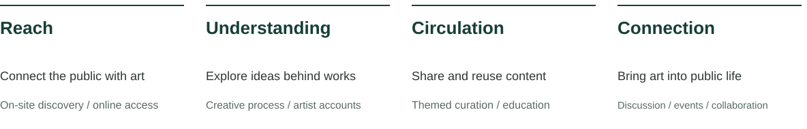
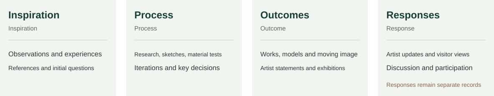

Water and the lakeside terrace at Autumn Moon over the Calm Lake. Photograph by Dong Xuming, published in a 2023 report; not a survey of the site in 2026. Image source
The Project
The project aims to sustain the public reach of CAA’s art and culture. Gushan, where the National Academy of Art was founded, provides a historical setting for public encounters, while an online archive gradually preserves graduate works and their available inspirations, research, sketches and outcomes.
At Gushan
Preserve views, walking and rest. Historical references and selected creative materials introduce art discovery and shared conversation.
The Online Archive
Support full records, direct search, process reading, personal collections and ongoing circulation, with independent online access.
Current stage
Building on site and functional research, compare interaction precedents and propose two approaches. Locations and spatial arrangements await fieldwork.
CAACOSMOS and digital graduate exhibitions already offer online access. This project investigates connections between historical place, process archives and public participation.CAA’s CAACOSMOS announcement
Cultural Reach and Group Research

Reach, understanding, circulation and social connection are four intended contributions. Each can occur independently; their actual impact requires observation and evaluation.Team Research
YT
The continuation of ideas, unfinished works, artists' development and the circulation of art between people.
WC
Creative trajectories, sketches and processes, possibilities for bringing works into physical space, and virtual displays of past graduation works.
ZZY
Public issues in the city as entry points, public responses, connections between online and on-site experiences, and feedback to artists.
YYH
An archive of past works and processes, Gushan's historic site, VR/AI-assisted experiences and spatial connections.
Gushan
The National Academy of Art was founded at Luoyuan on Gushan. Traces of the academy's history remain alongside landscapes and cultural facilities in ongoing use. Site research begins by understanding both before considering new functions.
The Early Campus Gate and WallSource caption: 1928; published in 2018. Records the early gate's appearance, without establishing today's campus boundaries.Sources
Where CAA Began
The National Academy of Art was founded at Luoyuan on Gushan in 1928. This site study draws on documented historical images, commemorative objects and existing public uses.
The gate, lakeside buildings and outdoor sketching place the academy's history in a tangible setting. These records can help the public understand how artists studied and worked here. Connections between contemporary works and Gushan still require documentary support.
The Academy Name Stone and West Lake Art MuseumImage published in 2018; the date taken has not been independently verified. Shows proximity, without establishing dimensions, boundaries or permission for use in 2026.Sources
Traces of the Academy's History Still Visible Today
A stone bearing the academy's historic name stands at Gushan. CAA's account distinguishes the original stone carved in 1929, now held at the Nanshan campus history museum, from other stones bearing the same inscription. The 2003 recarving date at Nanshan should not be assigned to the Gushan stone.
Zhejiang University Archives records the survival of Hutian Yibi Tower. Its current use, accessible areas and the precise correspondence between historic Luoyuan and the present site remain to be verified.
Waterfront Buildings at Hardoon Garden (Luoyuan)Source caption: 1930s; published in 2018. A historical architectural image; no identification with a surviving building is assumed.SourcesStudents Sketching at GushanSource caption: 1930s; published in 2018. Records the relationship between teaching and the landscape.Sources
Historical Group Photographs and Return Visits
Staff and Students at Luoyuan, Gushan — DetailThis source dates the photograph to 1928; published in 2018. An official republication captions it as 1929; the discrepancy is retained.SourcesReturning to Gushan in 2018 — DetailSource caption: 2018. An academy-organised return visit, rather than evidence of a general demand among graduates to return.Sources
The photographs compare memories of the site; they are not a precise survey from matching viewpoints. For the differing date, seethe 1929 caption in CAA's republication. CAA's 2018 report documents the visit but does not establish users' willingness to use a digital works archive.
Public Spaces Still in Use
Images from earlier reports help identify spatial types. Courtyards, covered walkways and museum grounds already serve viewing, rest and cultural visits; their availability for this project has not been established.
Courtyard Moon Gate and Covered WalkwayReport dated 5 August 2023; original caption: Yushu Tower. Shows the entrance and inside–outside relationships; current access and rules for staying require verification.Source: Tide News; photograph by Dong XumingYuebo PavilionImage in a report dated 5 August 2023. Shows the lakeside pavilion and its views, without implying permission to install experience facilities.Source: Tide News; photograph by Dong XumingEntrance to Zhejiang Provincial Museum, Gushan BranchReport dated 21 May 2020; the date taken has not been independently verified. This is not the entrance to West Lake Art Museum and does not establish access conditions in 2026.Source: Zhejiang Online
Existing landscape, passage, rest and cultural visits form the foundation of the spatial design.
Existing Functions
Lakeside views, walking, photography and rest.
Visits to art museums and other cultural venues.
Historical commemoration, inscriptions and cultural recognition.
A public service station and existing cultural activities.
Digital interpretation initiatives already exist; current operation and effectiveness require verification.
Conditions for Spatial Use
New content must retain normal passage, shared views and places to rest.
Existing buildings, pavilions and service stations are not automatically available to the project.
Historic boundaries do not establish current land-use or development boundaries.
Reports of some gallery closures in August 2026 cannot replace a current venue-by-venue check.
Permissions for the site, facilities and content need to be secured separately.
Historic Luoyuan does not define land currently available for development. Differences between the 1956/1959 historical accounts and the 1928/1929 photograph captions are retained. Site photographs support recognition; current access and available areas require separate checks.
People
Users include passers-by as well as graduates and creators looking for particular works. The six roles can overlap; one person may move between a brief encounter, close reading and shared discussion.
Passing By and Visiting
People may arrive to walk, photograph the lake or learn about its history, then choose whether to explore the art.
Keep paths clear. Offer a brief encounter and an easy exit.
Alumni and Companions
Find a specific work, then share stories, point out details and discuss the same material together.
Direct search and a shared view.
Learning and Maintaining Content
Students, creators and content teams need dependable process records and an archive that can be maintained.
Traceable sources and clear responsibility for updates.
These needs are research hypotheses based on roles and behaviours, rather than survey or interview findings. One person may move between roles.
Six Roles and Their Needs
User
Initial Purpose
Work Sought
Behaviours to Support
Spatial Needs
A General Visitors
Walking by the lake, photography, rest
Usually unspecified
Discover voluntarily, or choose not to participate
Clear routes and views; easy exit
B Cultural Visitors
Exhibitions and history
From broad to specific
Recognise history; explore themes
Compare with real objects; pause briefly
C Past Graduates
Return and show works to others
Specific artist or work
Find quickly, tell stories and share
View together with companions
D Companions
Accompany someone; understand their work
Emerges through conversation
Look, listen, point and offer interpretations
Shared sightlines and space to talk
E Students and Creators
Learning, research, inspiration
Defined themes or sources
Search, compare processes, maintain records
Reading conditions; detailed searches can happen elsewhere
F Content and Operations Teams
Communication, services, management
Defined by responsibilities
Review, update, maintain and collaborate
Clear responsibilities and service conditions
Functional priorities distinguish between:
Baseline public use:People who do not engage with digital content can still walk, enjoy views, rest and visit cultural venues.
Experience benefits:Assess practical benefits through incidental discovery, specific searches, personal understanding and shared viewing.
Operational requirements:The academy's content team, site managers and maintenance providers need distinct responsibilities; these are essential requirements.
Specific motivations, interaction preferences and sustained participation are research hypotheses, not survey or interview findings. Mobility, hearing, vision, language and whether someone visits with others affect all roles.
Continued engagement also depends on content and ongoing relationships:
General visitors:A personally relevant work and further material to explore can give visitors a reason to return online.
Cultural visitors:Clear historical information, themes that can be explored further and reliable sources.
Graduates and companions:Find works and understand their processes, with opportunities to continue telling, updating and responding.
Students and creators:Complete records, clear citation information and relevant themes provide practical learning value.
Operators:Stable responsibilities, content and resources enable continued updating and maintenance.
Site Functions
The site prioritises historical understanding and discovering art. Reading, shared viewing and conversation require suitable places to pause. Deeper media experiences and events depend on site and management conditions. The online archive shares content with the site while remaining independently accessible.
Gushan will not permanently display every past graduation work in physical form.
At Gushan
Recognise the history, discover art, pause and talk.
↔
The Online Archive
Search works, read their processes, save and respond.
↔
Cultural Reach
Sharing, learning, curated themes and lasting connections.
The archive is also accessible independently. Visiting Gushan is not a prerequisite.
Functional Structure
Level
Main Task
On-site Role
Online Role and Current Direction
F0 Public Foundation
Preserve existing public life
Views, passage, rest, cultural visits and equitable access
Functions independently of digital participation
F1 Historical Understanding
Understand CAA's origins
Recognise real objects; compare the site with historical records
Extend into historical archives; a priority for development
F2 Discovering Art
Incidental discovery or direct search
Optional entry points, previews and ways to find works
Thematic discovery and specific searches; a priority for development
F3 Understanding and Exchange
Understand ideas and creative choices
Places to pause, view together and talk
Full processes, artists' accounts and responses; assess the added value of being on site
F4 In-depth Experiences
Specific media and cultural events
F4a supervised media; F4b themed events
Virtual content accessible independently; on-site deployment is conditional
F5 Cultural Circulation
Bring content into wider society
Public exchange, events and cultural encounters
Story sharing, themes, educational citation and collaboration; essential support
M Operational Support
Sustain all functions
Responsibilities for site, equipment, access and maintenance
Collection, permissions, review, updates and feedback; essential conditions
F0–F5 and M describe functions, not seven rooms. F5 runs through all content and is supported primarily by the online archive and wider networks.
Spatial Relationships
Public visits:Maintain existing passage, views, rest and cultural visits.
History and discovery:Identify real objects, read brief information and reach specific works quickly.
Pausing and exchange:Support close looking, graduates' accounts, pointing and discussion among companions.
Conditional experiences:Check safety, environment, scheduling and service conditions separately for supervised media experiences and themed events.
Functional relationship diagram. Solid lines indicate core links; dashed lines indicate conditional links. It does not define site boundaries, rooms or a fixed visitor route.Behaviours and Spatial Conditions
Behaviour
Body and Social Relationships
Environmental Needs
Design Approach
Walking and Viewing
Walking, stopping and photography without crowding each other
Continuous views and routes
Retain existing uses
Recognising History
Read information alongside real objects
Visible, readable, with room for a brief stop
Identify gaps in existing interpretation first
Incidental Discovery
Approach voluntarily and leave freely
Low disturbance; no compulsory queue
Direct access to specific content
Specific Search
A clear goal and quick confirmation
Avoid monopolising a shared public interface
Support personal access alongside suitable shared interfaces
Close Reading
Alternate sitting and standing; zoom and compare
Readable details and controlled glare
Use places where people can pause
Shared Viewing
See together, point, talk and take turns
Equitable access without blocking others
Compare media before choosing a large screen
Supervised Media Experiences
Wearing equipment, waiting, handover and exit
Safety boundaries and management support
Deploy only when conditions are met
Cultural Events
Gathering, speaking, setup, removal and restoration
Compatible sound levels and scheduling
Work within approved conditions of use
Shared viewing depends on seeing the same content, pointing things out, taking turns and talking. Large screens, synchronised phones and fixed headset rooms remain options to assess. Areas and viewing distances await measurement.
Comparing Three Ways to Intervene
Criterion
A Integrate Existing Facilities
B Light-touch Adaptation of Existing Spaces
C Independent Reversible Structures
Supported Behaviours
Recognising history, brief discovery and quick access
Pausing, reading, conversation and conditional experiences
Meet a clearly identified need not otherwise supported
Public Use
Existing facilities may already be at capacity
Confirm existing uses and times available for sharing
Installation and visitor activity must retain clear passage
Historic Objects
Attachments may affect fabric and interpretation
Both use and adaptation require coordination
Independent reversible structures can still affect the landscape and ground conditions
Maintenance Needs
Content updates and checks of physical displays
Environment, cleaning, equipment and staff
Maintenance, storage, repair and removal
Permission for Use
Secure consent for both facilities and content
Check spatial, management and access conditions
Define installation, management and restoration requirements
Reversibility
Assess the specific attachment method
Even a small adaptation may be difficult to reverse
Restorability is a design aim that still needs demonstration
Current Direction
First check whether existing facilities can meet the need
Investigate conditions for pausing and exchange
Develop only where A/B cannot support a necessary behaviour
The three approaches can be combined. Attachments to existing facilities may affect historic fabric; independent reversible structures can affect the landscape and ground. Risk cannot be ranked simply by how much is added.
Coexistence and Conflict
ConflictCoordinateCompatible
The matrix compares competition between two activities within limited space or time. Conflict: needs resolution first. Coordination: can coexist under suitable conditions. Compatible: no obvious inherent conflict. These are design hypotheses to be calibrated against field evidence.
P Passage
V Views
H History
D Search
R Reading
C Co-viewing
I Immersion
T Events
M Maintenance
P Passage
—
Coordinate
Coordinate
Coordinate
Conflict
Conflict
Conflict
Conflict
Coordinate
V Views
Coordinate
—
Compatible
Coordinate
Coordinate
Coordinate
Conflict
Conflict
Coordinate
H History
Coordinate
Compatible
—
Compatible
Compatible
Coordinate
Coordinate
Coordinate
Coordinate
D Search
Coordinate
Coordinate
Compatible
—
Coordinate
Coordinate
Conflict
Coordinate
Coordinate
R Reading
Conflict
Coordinate
Compatible
Coordinate
—
Coordinate
Coordinate
Conflict
Coordinate
C Co-viewing
Conflict
Coordinate
Coordinate
Coordinate
Coordinate
—
Coordinate
Coordinate
Coordinate
I Immersion
Conflict
Conflict
Coordinate
Conflict
Coordinate
Coordinate
—
Conflict
Coordinate
T Events
Conflict
Conflict
Coordinate
Coordinate
Conflict
Coordinate
Conflict
—
Coordinate
M Maintenance
Coordinate
Coordinate
Coordinate
Coordinate
Coordinate
Coordinate
Coordinate
Coordinate
—
P Passage
Passage
V Views and Rest
View
H Recognising History
History
D Discovery and Search
Discovery
R Individual Reading
Reading
C Shared Viewing
Co-viewing
I Supervised Immersion
Immersion
T Themed Events
Thematic Activity
M Operations and Maintenance
Maintenance
Extended reading, storytelling and waiting should take place outside continuous routes.
Digital interfaces require checks for glare, brightness, gathering and orientation.
Headset experiences require arrangements for handover, exit, safety and management.
Themed events need coordination with existing uses, including sound, setup, removal and restoration.
Interaction Case Studies
Six case studies examine entry from a place, discovery through interests, participation around artworks and continued viewing after a visit.
Connecting Photographs and Artworks
Art Palette
Google Arts & Culture, 2018 | Photo and colour search
Choose a photo or paletteExtract dominant coloursFind related artworks
People upload a photograph or adjust a palette to find artworks with similar colours. The photograph may show a landscape or an everyday object. A visible relationship connects an ordinary act of looking with the discovery of art.
Transfer: a visitor’s West Lake photo can connect to a real work with a clear explanation such as “related by colour”.
Limit: similar colours do not establish a shared subject or place of creation. Thematic connections need artwork records and editorial work.
Official illustration for the 2018 Art Palette experiment. The image input and palette-based results are visible in the same interface. Image source
Actions, Feedback and Artworks
ArtLens Reimagined
Cleveland Museum of Art, USA, 2026 version · Art and participation
Encounter a collection workCreate, investigate or converseSave participation
The museum connects selected collection works with creation, investigation and conversation. Visitors act and express ideas, then save participation through their phones. Activities are organised around specific works so that technology remains tied to what is being viewed.
Transfer: identify an accessible point of participation within a work, then connect the response back to the work and its interpretation.
Limit: some activities use generative technology and do not reconstruct an artist’s decisions. Its dedicated venue, staff and technical scale cannot simply be transferred to Gushan.
Pottery Explorer: gestures shape digital clay while collection vessels appear alongside for comparison. Cleveland Museum of Art, 2026. Image source
An existing object provides the clue; the phone carries the conversation. Historical project, 2013. Image source
Hello Lamp Post
Bristol, UK, 2013 · Place-based entry
Find an object numberSend a textReceive a reply and respond
Existing street objects, including lamps and postboxes, became starting points for conversation. People texted an object number, received questions and contributed stories. One location could connect responses from different people within an ordinary walk.
Transfer: a historical clue at Gushan can open content without a physical display position for every work.
Limit: borrow the connection to place, rather than the SMS format. Any entry point or use of an existing surface needs permission.
Collecting is tied to a specific work; a visit code enables retrieval. Image from the museum’s historical project. Image source
Cooper Hewitt Pen
New York, USA, introduced in 2015 · Collection and return
Touch a label to saveLink a visit codeRetrieve content after leaving
Visitors used a dedicated pen to collect works from labels and save designs created during the visit. A code on the ticket allowed them to retrieve that content afterwards, linking saved objects with a particular personal experience.
Transfer: make works, personal choices and process links retrievable, giving people specific content to return to.
Limit: the museum’s guide currently notes that these interactive technologies are unavailable. Treat this as a historical mechanism; Gushan need not reproduce the pen or equipment handover.
San Francisco, USA, 2017–2020 · Interest-based discovery
Send a word, colour or emojiReceive one artworkExplore further
Users send “send me” followed by a keyword, colour or emoji and receive a collection image and caption. They can immediately encounter a work with context, without knowing art categories or an exact title.
Transfer: offer one documented work first, followed by options to see another, read more or search.
Operational lesson: the service ended in 2020, with the museum citing messaging costs and maintenance demands. Retrieval needs content and tags; even a lightweight entry requires ongoing support.
London, UK, UCL historical project · Public responses
Read a question about an objectContribute a viewRead other views
Digital interfaces in galleries and online invited visitors to respond to collection objects and questions. Later visitors could encounter earlier responses, extending discussion beyond a person and an object to exchanges among visitors.
Transfer: a visitor’s interpretation can become a subsequent response to a work and a starting point for companions or later visitors.
Limit: moderation and ongoing management are needed. Comments remain separate public records rather than substitutes for creator materials; volume does not establish depth.
Give the entry point specific content. A historical photo, sketch or view establishes interest; a QR code opens related material rather than only the platform homepage.
Return participation to the work. Photos, choices and short statements can all be inputs; responses should explain a connection and reveal real process materials.
Make something specific retrievable. Saving a work, its process and a personal question is a more direct starting point than requiring an app download or daily ratings.
Two Interaction Ideas
Provisional proposals · Exact locations and media will follow site visits.
The two approaches can coexist: visitors may enter through a view or photograph, or go directly to a creative choice. Both share saving and return access, without requiring everyone to follow one route.
Find Art through a Photograph
A visitor takes a photo at Gushan or selects something that interests them, then encounters a related CAA work. One discovery comes first; process archives and virtual exhibitions offer optional depth.
Connecting a view with the archive
The photo option starts with explainable colour relationships or editorial topic tags. Random discovery offers surprise; interest choices support people who prefer not to use photos. All draw on the same documented works.
Visitors should understand the basic on-site content without scanning. Phones offer further depth for those who choose it, without a permanent physical display of all graduation works.
View-to-content relationship
One view, one related work
A view at the site
↓
Colour cuesChosen interests
↓
A related, documented artworkAuthor and context · Connection · Creative process
Scene photograph: Dong Xuming, Tide News, 2023. Used to illustrate the view-to-work relationship.
Notice a clue
A sourced historical photo, sketch or observation introduces the place’s connection with CAA.
Choose an entry
After scanning, optionally use a photo, interest word or random discovery; no download comes first.
Receive a work
Show the work, basic information and the basis of its connection: colour, topic or another documented link.
Explore or save
Open sketches, process or a related exhibition, or see another work and save it for later.
Entry Points and Requirements
On-site trigger
Use permitted guides, partner labels or event materials to open related content. Historical objects such as monuments are not assumed to be mounting surfaces.
What it needs
Works need basic records, publication rights and usable tags; photos are optional. Visual similarity is identified separately from a documented creative connection.
Explore Creative Choices
Encounter a student’s documented starting point, express a view, then see how sketches, experiments and decisions shaped the work. Participation supports understanding of the thinking behind it.
From a personal choice to the creator’s decisions
The interaction need not be a quiz. Different works can support different actions, provided that participation leads to relevant process material. People who want the complete work can go directly to it.
AI responds to the concern a visitor expresses and helps explain the archive; creator statements and public comments remain distinct. Completed works can reveal documented processes and outcomes. Unfinished ideas support open discussion, with no promised final outcome.
Participation and process comparison
My choice beside the creator’s process
One creative starting point
The visitor’s interpretationChoices, thoughts, questions
The creator’s processSketches, experiments, decisions
Compare and interpretUnderstand how choices develop
Documented outcome · Further questions · Saved reflections
Encounter the starting point
A sketch, observation or material experiment introduces the situation the creator faced.
Express a view
Take part through a choice, short statement or simple ranking; specialist knowledge is not required.
Compare the real process
Reveal sketches, decisions and the outcome to understand the reasons behind different approaches.
Ask and reflect
AI helps explain relevant records; visitors may ask more, save content or leave a separate comment.
Entry Points and Requirements
On-site trigger
A documented fragment of the creative process invites a pause. Individuals can use a phone; companions can discuss it together. A shared interface can be compared after site visits.
What it needs
Prioritise authorised works with a documented starting point, key process and outcome. AI answers need traceable records; public comments and creator responses need clear arrangements.
After Saving
Save a Work and a Question→Revisit the Process and Responses→Choose to Stay Connected
Both interactions can save a work, process links and personal questions; photos or choices are saved only if the visitor wishes. A collection records the encounter rather than transferring an original work or copyright.
Creator responses, process updates, related works and themes provide reasons to return. Interested visitors may then subscribe. A web experience can work first; a dedicated app and daily recommendations remain later options.
Alumni visiting with friends can directly find a documented work, choose process material to discuss and view it together, without passing through random discovery or participation prompts.
Connecting West Lake with the archive on site
Select limited on-site content around how CAA studied, observed and created here. These content relationships can overlap; they do not yet define separate rooms or fixed zones.
On-site content
What it explains
Online extension
Historical evidence at Gushan
Sourced historical photographs, teaching records and memorial clues explain the connection between CAA and this place.
Related school history and records.
Observation and creative process
Studies, sketches, experiments and creator statements connect the setting with creative thinking.
Comparison of inspiration, process and outcome.
Rotating contemporary content
Selected student works and process fragments introduce the concerns of CAA today.
Works, themes, comments and collections.
Connections to West Lake can come from documented history, observation and public life; not every work needs to depict the lake. Works by established artists may be included when they explain teaching or creative ideas and use conditions permit. VR remains optional depth for suitable content.
Archive Content

Work records encompass inspiration, process, outcomes and responses, connecting creative backgrounds, development and public exchange.
Each record retains the artist, year, discipline, theme, medium, version, source and permissions. Process materials are collected as available; coverage of all past works is not assumed from the outset. On-site content is retrieved as needed; access depends on records and permissions.
Conditions to Confirm after the Site Visit
Condition to Verify
Evidence Needed
Decisions Affected
Boundaries, Management and Conservation
Actual available areas, responsible bodies and approval requirements
Whether existing interfaces, buildings or independent structures can be used
Existing Buildings and Access
Use, schedules and access conditions for each space
Whether space is available for pausing or in-depth experiences
Passage and Equitable Access
Clear widths, slopes, obstacles, waterside conditions and exit routes
Whether staying, waiting or services obstruct public use
Observed Staying and Companion Behaviours
Where people stop, stand, sit and talk
Demand for shared viewing and the conditions that matter most
Light, Sound and Facilities
Glare, rain protection, noise, connectivity, power and seating
Suitability for reading, audio, public interfaces and VR
Works and Process Materials
Available records, permissions, versions and completeness
Archive scope, AI interpretation and depth of experience
Operations and Continued Interest
Responsibilities, resources, update methods and willingness to participate
Whether maintenance is feasible and continued engagement has value